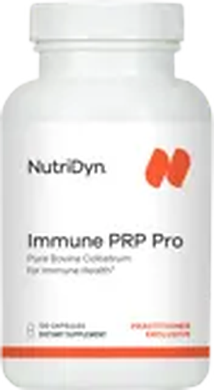

Lyme Disease
and other tickborne infections
Lyme disease is the most common illness spread by ticks in the U.S.: an estimated 476,000 Americans are diagnosed and treated for it each year. Borrelia bacteria pass from the bite of an infected blacklegged (deer) tick, and the same tick can carry other germs too. Avoiding bites is the best defense; early treatment is the next best.
HOW IT SPREADS
SYMPTOMS
KNOW YOUR TICKS adult females shown
Lifestyle RecommendationsAvoid the next bite, and stay on your medicine
Light colors, pants in socks. Permethrin is for clothes, never skin.
EPA-registered: DEET, picaridin, IR3535 or oil of lemon eucalyptus.
Dry clothes on high heat for 10 minutes. Shower within 2 hours.
Hair, ears, armpits, belly button, waist, groin, behind knees. Pets, too.
Fine-tipped tweezers at the skin, pull straight up. Note the date.
Antibiotics killing germs can do that. Never stop them on your own.

- Supports a healthy gut microbiome
- Antibiotics spare its yeast, not its bacteria
Per capsule: 30 billion CFU when made, 7 strains: 5 billion S. boulardii (a yeast) and six bacteria (Lactobacillus, Bifidobacterium, Bacillus)

- Promotes healthy immune function
- Supports the gut lining
Per 4 capsules: 1,720 mg bovine colostrum, standardized to 30% IgG antibodies, with PRP, IgA, IgM and lactoferrin

- Promotes healthy inflammatory markers
- Supports overall health and well-being
Per 3 capsules: 800 mg ginger root; extracts: 250 mg CurQfen (curcumin with fenugreek fiber), 250 mg boswellia, 200 mg white willow bark, 150 mg hops, 60 mg devil’s claw

- Supports healthy glutathione levels
- Provides antioxidant and detox support
100 mg reduced L-glutathione per 1 mL dropper, in liposomes made with sunflower lecithin

- Supports your cells’ energy production
- Promotes healthy antioxidant status
Per 3 capsules, including 300 mg taurine, 200 mg acetyl-L-carnitine, 100 mg CoQ10, 75 mg alpha-lipoic + 45 mg R-lipoic acid, 75 mg magnesium, 250 mcg vitamin K1
Your daily rhythm
- Immune PRP Pro 4 capsules
- Inflam-Eze Plus 3 capsules
- Liposomal Glutathione 1 dropper
- Immune PRP Pro 4 capsules
- Liposomal Glutathione 1 dropper
- UltraBiotic Daily Multi-Strain 1 capsule
- Mito Recharge 3 capsules with a snack, 2 to 3 hours from doxycycline
Pharmacist checkKeep taking your medicines.
- Doxycycline: take it 2 to 3 hours apart from calcium, magnesium (Mito Recharge has some), iron, zinc and antacids, which block it.
- Blood thinners: Inflam-Eze Plus (ginger, curcumin, willow bark) can add to bleeding risk with warfarin, apixaban, aspirin or clopidogrel. Doxycycline can make warfarin stronger; Mito Recharge’s vitamin K1 can make it weaker. Ask your pharmacist first.
- Aspirin-like willow bark: Inflam-Eze Plus is not for children, teens or aspirin allergy.
- Green tea in Mito Recharge: take with food. Liver problem? Ask your doctor first.
- Probiotic: take UltraBiotic at least 2 hours apart from each antibiotic dose. Its S. boulardii is not for people with a central IV line or a weakened immune system.
- Hives, swelling or trouble breathing mean an allergy, not die-off: get help now. Alpha-gal (red-meat) or milk allergy? Skip Immune PRP Pro (cow’s colostrum).
- Doses are for adults. Pregnant, nursing or under 18? Ask your pharmacist first.